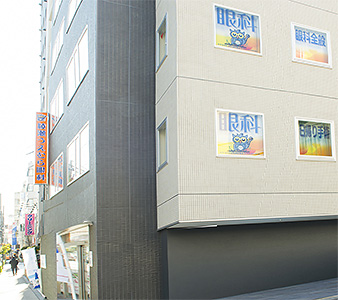

白内障手術実績2000件以上 眼底疾病症研究歴１5年 手術をしない裸眼視力の回復 児童の近視進行の抑制 ナイトレンズの処方

眼はカメラのような構造をしています。

「茶目のすぐ後ろに水晶体がありますが、６０歳を超えると加齢現象で少しずつ濁ってきます。

最初は少々濁っても自覚症状はわずかですが、進行に伴って かすみ・まぶしさ・だぶり等様々な症状を伴ってきます。 基本的に加齢現象であるため、誰にでも起こりますし、点眼や内服治療で改善することは困難です。また眼鏡を代えても視力は改善しません。糖尿病やアトピーをお持ちの方は若年で発症することも珍しくありません。 視力が下がり始めたら手術を考えます。当院では日帰り手術を行っています。 （詳しくはこちら） 手術というと怖いイメージがありますが、手術前に必ず個別に時間をとり、 ご納得がいくまでご説明しています。
当院の白内障手術は、すべて日帰りで行っております。 安全を最優先して手術を行うために、検査・診察・手術のご説明という流れに沿って 診療を行っております。 通常、初診から手術当日までに３回～４回程度の受診をお願いしています。 下に一般的な方の流れをお示しします。
※人によって異なることがあります
眼科全般・緑内障・糖尿病網膜症（網膜硝子体疾患）・加齢黄斑変性・日帰り白内障手術・小児眼科（斜視・弱視）・オルソケラトロジー
| 診療時間 | 月 | 火 | 水 | 木 | 金 | 土 | 日・祝 |
|---|---|---|---|---|---|---|---|
| 午前 ８：４５〜１１：３０ | ◯ | ◯ | ◯ | ◯ | ◯ | ◯ | ／ |
| 午後 ２：００〜 ６：００ | ◯ | ◯ | ※ | ◯ | ◯ | ／ | ／ |
水曜午後 手術特殊検査 休診日：日曜日・祝日・土曜午後
＊午前の混雑時は受付終了を11時15分に早める場合があります
■ 綾瀬うえむら眼科院長 植村明弘
■ 資格
医学博士、オルソケラトロジー認定医、日本眼科学会認定眼科専門医、
光線力学療法認定医、ボトックス治療認定医
■ 略歴
■ 住所 東京都足立区綾瀬4－8－17 相善ビル2F
■ 電話 03-3620-4113
■ 交通 JR常磐線各駅・地下鉄千代田線
綾瀬駅 西口 徒歩２分
※オレンジの看板が目印です
院内はすべてバリアフリーです
駅側の外観
江北橋通り側の外観
※ご応募は、お気軽にお電話（03-3620-4113）ください。